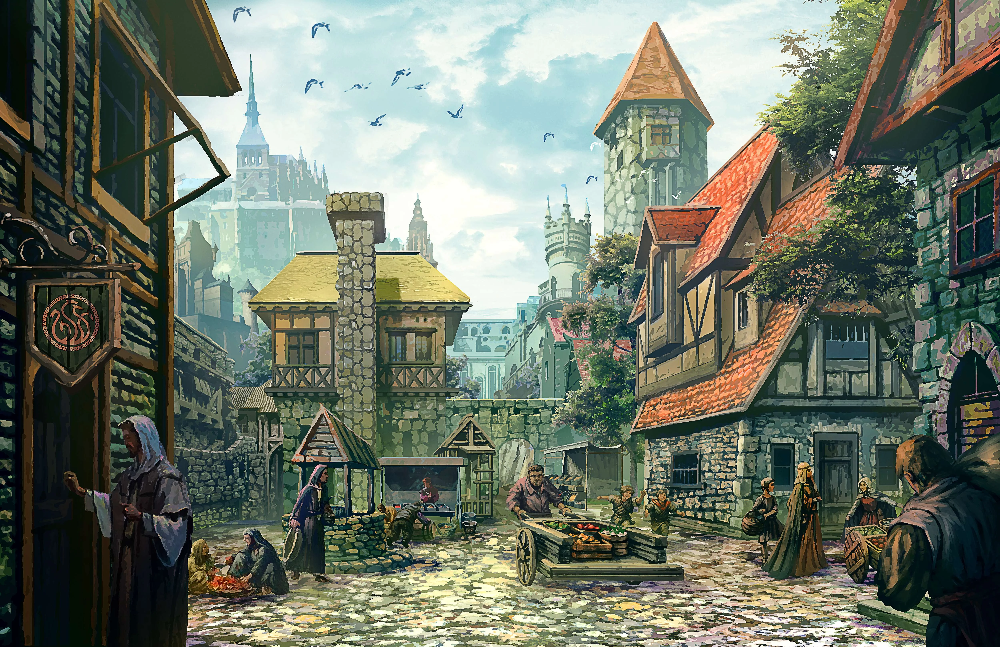

Regresar al portal con el objeto mágico
Azura cruza el portal de regreso a su aldea, la esfera luminosa en sus manos irradia una energía cálida. Al llegar, usa su poder para levantar barreras protectoras alrededor del pueblo, alejando amenazas y asegurando la paz por años.
La aldea celebra a Azura como su heroína, y ella sabe que su valentía y honestidad salvaron a todos.
Fin de esta aventura.